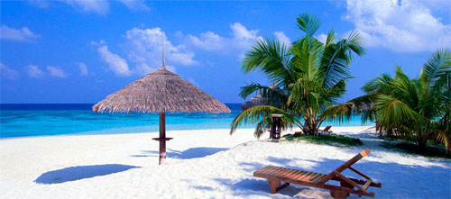

de areia, cidades históricas que deixam os turistas admirados. As cidades do litoral são as mais conhecidas e visitadas,
como no caso de Porto de Galinhas, Natal, Porto Seguro, Aracajú, Fortaleza, Maceió, Recife, Salvador, João Pessoa,
entre outras.

Um dos locais mais bonitos do Nordeste é o Parque Nacional dos Lençóis Maranhenses. A sensação de ficar no
local é a de estar num Oásis. A areia branquinha, as águas cristalinas dão um aspecto mágico ao lugar. Os lençóis ficam
localizados a 260 km de São Luís, capital do Maranhão. Você pode chegar à localidade por carro pela BR 135, ou de
barco pelo Rio Preguiças.
As cidades históricas também são um capítulo a parte. Salvador é a mais visitada delas. Na capital baiana você pode
visitar a Baía de Todos os Santos, o Pelourinho, o Centro Histórico, conhecer o elevador Lacerda, a Igreja Nosso Senhor
do Bonfim. A cidade tem praias para todos os gostos. Desde as mais calmas até os mares mais bravos e agitados.
Salvador também não deixa a desejar quando o assunto são os restaurantes, baladas e bares.
Outras cidades belas são Recife, Olinda e São Luís. Nelas os ritmos que agitam as comemorações são o frevo e o
maracatu, com carnaval de marchinha (Galo da Madrugada) e bonecos gigantes (mais conhecidos são os Bonecos de
Olinda). Por isso não deixe de conhecer a cultura local, afinal é imperdível.
A prática de Ecoturismo também está presente no Nordeste. Prova disso são locais como Chapada da Diamantina
na Bahia, ou o Parque Nacional da Serra da Capivara no Piauí.
Mas se você deseja fazer um passeio pelas praias do Nordeste, pode usar como transporte o famoso Buggy. Em
locais como Porto de Galinhas, o passeio pode ser feito com até quatro pessoas e se inicia no começo da manhã e vai
até o fim da tarde. Você terá a oportunidade de passar por várias praias como Maracaípe, Gâmboa, Muro Alto e até
passear pelas piscinas naturais de jangada.
Nossa dica é contratar donos de buggys que oferecem o serviço por um preço bem mais baixo do que o indicado em
agências. No litoral do nordeste você encontra o Lontra, ou Eduardo, um conterrâneo animadíssimo que faz toda a rota
do Porto de Galinhas, Praia dos Carneiros, Calhetas, Banho de Argila, Cachoeira do Urubu, além de agilizar os traslados
para você que quer conforto, diversão por um bom preço.